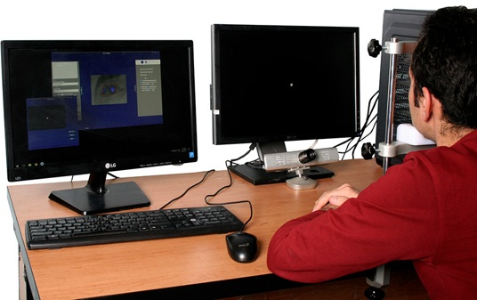

Digital design
SystemVerilog, FPGA implementation, RTL simulation, synthesis, and timing analysis.
Ithaca, New York
Electrical and Computer Engineer
I’m an electrical and computer engineer who enjoys understanding how things work and exploring new ideas. I like working on problems that bring hardware and software together, and I’m always curious to learn about areas beyond my own experience.
01 / Skills
SystemVerilog, FPGA implementation, RTL simulation, synthesis, and timing analysis.
C, microcontrollers, PCB design, Altium Designer, Keil µVision, and MCUXpresso.
Real-time image processing, pupil detection, eye tracking, and gaze estimation using C# and OpenCV.
C++, Python, PyTorch, SPICE, Cadence, Proteus, architectural simulation, and performance studies.
Linux development, and Git.
02 / Experience
Cornell University
University of Kansas

Toos BioResearch Co.
Digital Design Lab, Ferdowsi University of Mashhad
GLSVLSI · Second author
ASPLOS · Second author
HPCA · Third author
Iranian Conference on Electrical Engineering · First author
04 / Education
2024 — 2026
Cornell University
GPA 3.5/4 · Bridging the Memory and Compute Gap in AI Accelerators
2019 — 2021
Ferdowsi University of Mashhad
GPA 18.66/20 · Master–slave communication based on the HART industrial protocol
2010 — 2014
Ferdowsi University of Mashhad
GPA 17.43/20 · FPGA-based camera control unit
Teaching Experience
Verilog, simulation, synthesis, FPGA prototyping, finite-state machines, and TinyRV1.
RISC-V microarchitecture, pipelines, caches, multicore systems, and on-chip networks.
05 / Contact
Email, LinkedIn, and Google Scholar profiles are available below.